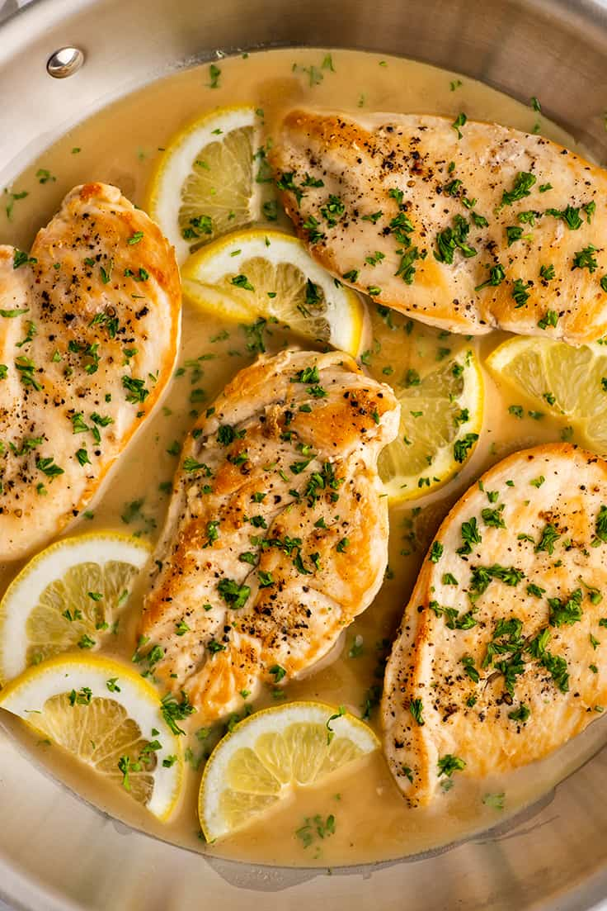

Lemon Chicken with Sauce

This is a delicious recipe that i have been making for a couple years now. It is refreshing and delicious. Please note that cast iron will be the best for this recipe. Please be careful when butterflying your chicken. That is how I lost the tip of my finger.
Ingredients
- 2lbs of boneless skinless chicken breast
- 1 box of noodles of your choice
- 3 cloves of garlic (minced)
- 2 Shallots (Minced)
- 1 3/4 cup of dry white wine
- 1 3/4 cup of heavy cream
- 1 3/4 cup of chicken stock
- 1 cup of flour
- Paprika to taste
- Pepper to taste
- Salt to taste
- 1 lemon
Instructions
- Butterly your chicken breasts and pound them out till they are 1/4 inch thick.
- Dredge your chicken breasts in a light coating of flour and but them in the HOT lightly oiled cast iron pan
- Fry your chicken breasts till golden brown. Once done remove from heat and add your garlic and shallots to the pan. Sear until fragrant
- Once fragrant, add white wine and simmer till wine is reduced to half. You should start boiling your water for your pasta at this point.
- Add chicken stock and heavy cream to pan, reduce heat to a simmer and add in the juice of 1 lemon.
- Cook your pasta and add chicken back into the pan. Let simmer for an additional 5 minutes. Drain your pasta and serve!